Anlage 7 Schiffahrtszeichen
Rheinschiffahrtspolizeiverordnung
Vorbemerkung:
1. Die Zeichen in Abschnitt 1 können, wie in Abschnitt II angegeben, ergänzt oder erläutert werden.
2. Die Tafeln können, um besser erkennbar zu sein, mit einem schmalen weißen Streifen eingefaßt werden.
Abschnitt I – Hauptzeichen
A. Verbotszeichen
A.1 | Verbot der Durchfahrt (allgemeines Zeichen); (§ 3.25 Nr. 1 Buchstabe b, § 6.08 Nr. 2, § 6.16 Nr. 4, § 6.22 Nr. 1, § 6.22a, § 6.25 Nr. 1, § 6.27 Nr. 1, § 6.28a Nr. 3, § 9.02 Nr. 5 und 6 und § 10.01 Nr. 4 Buchstabe c) | |
entweder Tafeln | 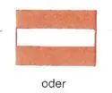 | |
oder rote Lichter | 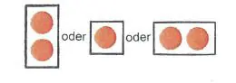 | |
oder rote Flaggen. | 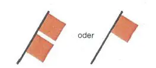 | |
Werden zwei Lichter oder zwei Flaggen übereinander gezeigt, bedeutet dies ein langdauerndes Verbot. | ||
A.1a | Gesperrte Wasserflächen; jedoch für Kleinfahrzeuge ohne Antriebsmaschine befahrbar. (§ 6.22 Nr. 2 Buchstabe a) | 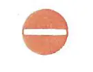 |
A.2 | Überholverbot, allgemein. (§ 6.11) | 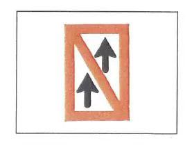 |
A.3 | Überholverbot für Verbände untereinander. Dies gilt nicht, wenn einer der Verbände ein Schubverband ist, dessen Länge 110,00 m und dessen Breite 12,00 m nicht über schreitet. (§ 6.11) | 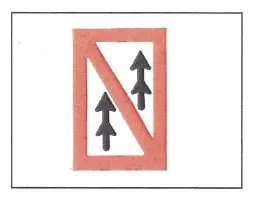 |
A.4 | Verbot des Begegnens und Überholverbot. (§ 6.08 Nr. 1) | 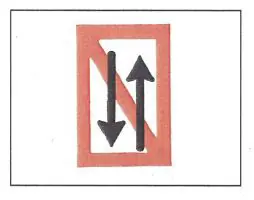 |
A.5 | Stilliegeverbot auf der Seite der Wasserstraße, auf der das Tafelzeichen steht. (§ 7.02 Nr. 1 Buchstabe c) | 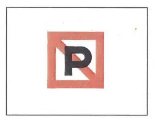 |
A.5.1 | Stilliegeverbot auf der Wasserfläche, deren Breite, gemessen vom Aufstellungsort, auf dem Tafelzeichen in Metern angegeben ist. (§ 7.02 Nr. 1 Buchstabe 1) | 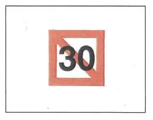 |
A.6 | Ankerverbot und Verbot des Schleifenlassens von Ankern, Trossen oder Ketten auf der Seite der Wasserstraße, auf der das Tafelzeichen steht. (§ 6.18 Nr. 2 und § 7.03 Nr. 1 Buchstabe b) | 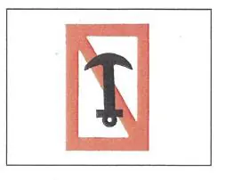 |
A.7 | Festmacheverbot am Ufer auf der Seite der Wasserstraße, auf der das Tafelzeichen steht. (§ 7.04 Nr. 1 Buchstabe b) | 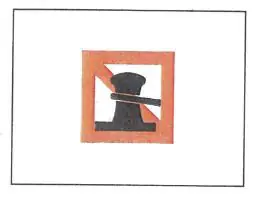 |
A.8 | Wendeverbot. (§ 6.13 Nr. 4) | 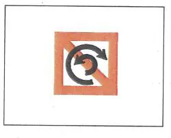 |
A.9 | Vermeidung von Wellenschlag (§ 6.20 Nummer 1 Buchstabe e und § 15.07 Nummer 8 Buchstabe b) | 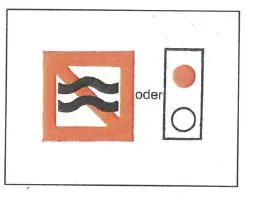 |
A.10 | Verbot, außerhalb der angezeigten Begrenzung zu fahren. (§ 6.24 Nr. 2 Buchstabe a) | 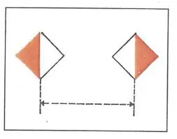 |
A.11 | Verbot der Einfahrt; die Vorbereitungen zur Fortsetzung der Fahrt sind jedoch zu treffen (§ 6.28a Nr. 1 Buchstabe c) | 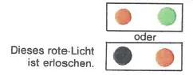 |
A.12 | Fahrverbot für Fahrzeuge mit Maschinenantrieb. (§ 6.22 Nr. 2 Buchstabe b) | 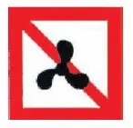 |
A.13 | (ohne Inhalt) | |
A.14 | Verbot des Wasserskilaufens. | 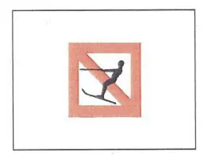 |
A.15 | Fahrverbot für Segelfahrzeuge. | 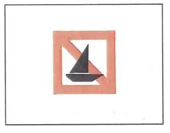 |
A.16 | Fahrverbot für Fahrzeuge, die weder mit Maschinenantrieb noch unter Segel fahren. | 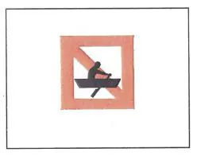 |
A.17 | Verbot des Segelsurfens. | 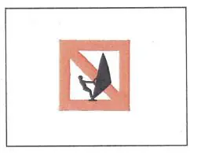 |
A.18 | Fahrverbot für Wassermotorräder (Waterscooter, Jetski usw.). | 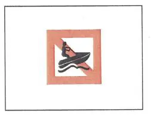 |
B. Gebotszeichen
B.1 | Gebot, die durch den Pfeil angezeigte Richtung einzuschlagen. (§ 6.12) | 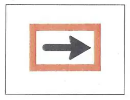 |
B.2 | a) Gebot, auf die Fahrrinnenseite hinüberzufahren, die auf der Backbordseite des Fahrzeugs liegt. (§ 6.12) | 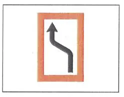 |
b) Gebot, auf die Fahrrinnenseite hinüberzufahren, die auf der Steuerbordseite des Fahrzeugs liegt. (§ 6.12) | 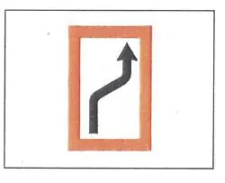 | |
B.3 | a) Gebot, die Fahrrinnenseite zu halten, die auf der Backbordseite des Fahrzeugs liegt. (§ 6.12) | 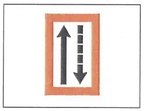 |
b) Gebot, die Fahrrinnenseite zu halten, die auf der Steuerbordseite des Fahrzeugs liegt. (§ 6.12) | 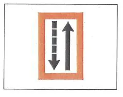 | |
B.4 | a) Gebot, die Fahrrinne nach Backbord zu kreuzen. (§ 6.12) | 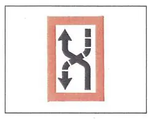 |
b) Gebot, die Fahrrinne nach Steuerbord zu kreuzen.. (§ 6.12) | 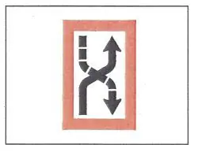 | |
B.5 | Gebot, unter bestimmten Voraussetzungen anzuhalten. (§ 6.28 Nr. 1) | 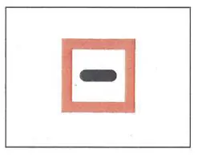 |
B.6 | Gebot, die angegebene Geschwindigkeit (in km/Std.) nicht zu überschreiten. | 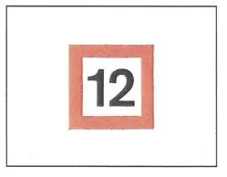 |
B.7 | Gebot, Schallsignal zu geben. | 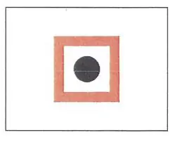 |
B.8 | Gebot, besondere Vorsicht walten zu lassen. (§ 6.08 Nr. 2) | 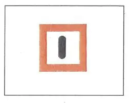 |
B.9 | a) Gebot, nur dann in die Hauptwasserstraße einzufahren oder sie zu überqueren, wenn dadurch die Fahrzeuge auf der Hauptwasserstraße nicht gezwungen werden, ihren Kurs oder ihre Geschwindigkeit zu ändern. (§ 6.16 Nr. 3) | 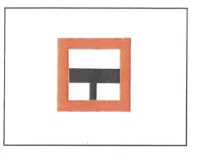 |
b) wie vor | 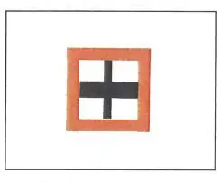 | |
B.10 | (ohne Inhalt) | |
B.11 | a) Gebot, Sprechfunk zu benutzen. (§ 4.05 Nr. 5) | |
b) Gebot, Sprechfunk auf dem angegebenen Kanal zu benutzen. (§ 4.05 Nr. 5) Beispiel: Kanal 11 | 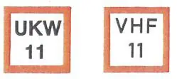 | |
B.12 | Gebot zur Nutzung von Landstromanschlüssen (§ 7.06 Nr. 3) | 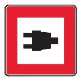 |
C. Zeichen für Einschränkungen
C.1 | Die Fahrwassertiefe ist begrenzt. | 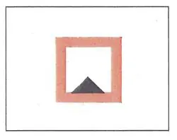 |
C.2 | Die lichte Höhe über dem Wasserspiegel ist begrenzt. | 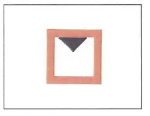 |
C.3 | Die Breite der Durchfahrtsöffnung oder der Fahrrinne ist begrenzt. | 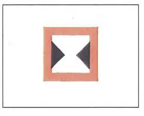 |
C.4 | Es bestehen Schiffahrtsbeschränkungen; sie sind auf einer zusätzlichen Tafel unter dem Schiffahrtszeichen angegeben. | 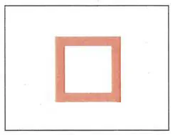 |
C.5 | Die Fahrrinne ist am rechten (linken) Ufer eingeengt; die Zahl auf dem Zeichen gibt den Abstand in Metern an, in dem sich die Fahrzeuge vom Tafelzeichen entfernt halten sollen. | 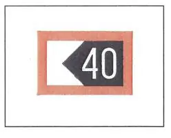 |
D. Empfehlende Zeichen
D.1 | Empfohlene Durchfahrtsöffnung | |
a) für Verkehr in beiden Richtungen; (§ 6.25 Nr. 2 Buchstabe a) | ||
b) für Verkehr nur in der Richtung, in der die Zeichen sichtbar sind (in der anderen Richtung untersagt). (§ 6.25 Nr. 2 Buchstabe b) | 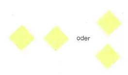 | |
D.2 | Empfehlung, sich in dem durch die Tafeln begrenzten Raum zu halten. (§ 6.24 Nr. 2 Buchstabe b) | 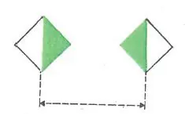 |
D.3 | Empfehlung, in der Richtung des Pfeils zu fahren; | 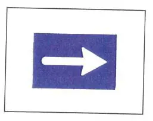 |
in der Richtung vom festen Licht zum Gleichtaktlicht zu fahren. | 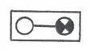 |
E. Hinweiszeichen
E.1 | Erlaubnis zur Durchfahrtsöffnung (allgemeines Zeichen). (§ 3.25 Nr. 1 Buchstabe a, § 6.08 Nr. 2, § 6.27 Nr. 2 und § 6.28a) | 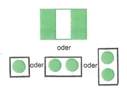 |
E.2 | Kreuzung einer Hochspannungsleitung. | 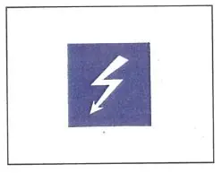 |
E.3 | Wehr | |
E.4a | Nicht frei fahrende Fähre. | 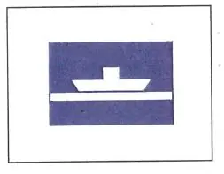 |
E.4b | Frei fahrende Fähre | 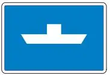 |
E.5 | Erlaubnis zum Stilliegen auf der Seite der Wasserstraße, auf der das Zeichen steht. (§ 7.05 Nr. 1) | 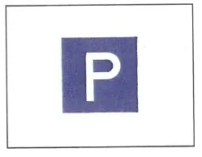 |
E.5.1 | Erlaubnis zum Stilliegen auf der Wasserfläche, deren Breite, gemessen vom Aufstellungsort, auf dem Tafelzeichen in Metern angegeben ist. (§ 7.05 Nr. 2) | |
E.5.2 | Erlaubnis zum Stilliegen auf der Wasserfläche zwischen den zwei Entfernungen, die, gemessen vom Aufstellungsort, auf dem Tafelzeichen in Metern angegeben sind. (§ 7.05 Nr. 3) | |
E.5.3 | Höchstzahl der Fahrzeuge, die auf der Seite der Wasserstraße, auf der das Tafelzeichen steht, nebeneinander stilliegen dürfen. (§ 7.05 Nr. 4) | |
E.5.4 | Liegestelle für Fahrzeuge der Schubschiffahrt, die nicht die Zeichen nach § 3.14 führen müssen. (§ 7.06 Nr.1) | |
E.5.5 | Liegestelle für Fahrzeuge der Schubschiffahrt, die die Zeichen nach § 3.14 Nr. 1 führen müssen. (§ 7.06 Nr. 1) | |
E.5.6 | Liegestelle für Fahrzeuge der Schubschiffahrt, die die Zeichen nach § 3.14 Nr. 2 führen müssen. (§ 7.06 Nr. 1) | |
E.5.7 | Liegestelle für Fahrzeuge der Schubschiffahrt, die die Zeichen nach § 3.14 Nr. 3 führen müssen. (§ 7.06 Nr.1) | |
E.5.8 | Liegestelle für andere Fahrzeuge als Fahrzeuge der Schubschiffahrt, die nicht die Zeichen nach § 3.14 führen müssen. (§ 7.06 Nr.1) | |
E.5.9 | Liegestelle für andere Fahrzeuge als Fahrzeuge der Schubschiffahrt, die die Zeichen nach § 3.14 Nr. 1 führen müssen. (§ 7.06 Nr. 1) | |
E.5.10 | Liegestelle für andere Fahrzeuge als Fahrzeuge der Schubschiffahrt, die die Zeichen nach § 3.14 Nr. 2 führen müssen. (§ 7.06 Nr. 1) | |
E.5.11 | Liegestelle für andere Fahrzeuge als Fahrzeuge der Schubschiffahrt, die die Zeichen nach § 3.14 Nr. 3 führen müssen. (§ 7.06 Nr.1) | |
E.5.12 | Liegestelle für alle Fahrzeuge, die kein Zeichen nach § 3.14 führen müssen. (§ 7.06 Nr. 1) | |
E.5.13 | Liegestelle für alle Fahrzeuge, die die Zeichen nach § 3.14 Nr. 1 führen müssen. (§ 7.06 Nr.1) | |
E.5.14 | Liegestelle für alle Fahrzeuge, die die Zeichen nach § 3.14 Nr. 2 führen müssen. (§ 7.06 Nr. 1) | |
E.5.15 | Liegestelle für alle Fahrzeuge, die die Zeichen nach § 3.14 Nr. 3 führen müssen. (§ 7.06 Nr. 1) | |
E.6 | Erlaubnis zum Ankern auf der Seite der Wasserstraße, auf der das Tafelzeichen steht. (§ 7.03 Nr. 2) | |
E.6.1 | Erlaubnis zur Benutzung von Ankerpfählen auf der Seite der Wasserstraße, auf der das Tafelzeichen steht. (§ 7.03 Nr. 3) | |
E.7 | Erlaubnis zum Festmachen am Ufer auf der Seite der Wasserstraße, auf der das Tafelzeichen steht. (§ 7.04 Nr. 2) | |
E.7.1 | Erlaubnis zum Festmachen am Ufer für das sofortige Ein- oder Ausladen eines Kraftwagens (§ 7.04 Nr. 2) | |
E.8 | Hinweis auf eine Wendestelle. (§§ 6.13 und 7.02 Nr. 1 Buchstabe i) | |
E.9 | a) Einmündende Wasserstraßen gelten als Nebenwasserstraßen. (§ 6.16 Nr. 1) | |
b) wie vor | ||
c) wie vor | ||
E.10 | a) Die benutzte Wasserstraße gilt als Nebenwasserstraße der einmündenden. (§ 6.1 Nr. 1) | |
b) wie vor | ||
E.11 | Ende des Verbots oder eines Gebots, das nur in einer Verkehrsrichtung gilt, oder Ende einer Einschränkung. | |
E.12 | (ohne Inhalt) | |
E.13 | Trinkwasserzapfstelle. | |
E.14 | Fernsprechstelle. | |
E.15 | (ohne Inhalt) | |
E.16 | (ohne Inhalt) | |
E.17 | Wasserskistrecke. | |
E.18 | Fahrerlaubnis für Segelfahrzeuge. | |
E.19 | Fahrerlaubnis für Fahrzeuge, die weder mit Maschinenantrieb noch unter Segel fahren. | |
E.20 | Erlaubnis zum Segelsurfen. | |
E.21 | Nautischer Informationsfunkdienst. Beispiel: Kanal 18 | |
E.22 | Fahrerlaubnis für Wassermotorräder (Waterscooter, Jetski usw.). | |
E.23 | Hochwassermarken. | |
Marke I Bezugswasserstand | ||
Marke II Bezugswasserstand | ||
Die Marken sind in heller Farbe auf dunklem Untergrund oder in dunkler Farbe auf hellem Untergrund angebracht. | ||
E.24 | Ohne Inhalt | |
E.25 | Landstromanschluss vorhanden |
Abschnitt II Zusätzliche Tafeln, Schilder, Pfeile oder Aufschriften
Die Hauptzeichen in Abschnitt I können durch zusätzliche Tafeln, Schilder, Pfeile oder Aufschriften ergänzt werden.
1. Schilder, die die Entfernung angeben, in der die durch das Hauptzeichen angezeigte Bestimmung oder Besonderheit zu beachten ist.
Die Schilder werden über dem Hauptzeichen angebracht.
Beispiele:
2. Pfeile, die angeben, in welcher Richtung der Strecke das Hauptzeichen gilt.
Beispiele:
a)
b)
c) Verbot der Einfahrt in einen Hafen oder eine Nebenwasserstraße, die in der angezeigten Richtung liegen: rotes Licht A.1 und leuchtender Pfeil.
(§ 6.16 Nr. 4) |
3. Schilder, die ergänzende Erklärungen oder Hinweise geben. Die Schilder werden unter dem Hauptzeichen angebracht.
Beispiele:
Anschluss für 400 V~ vorhanden |